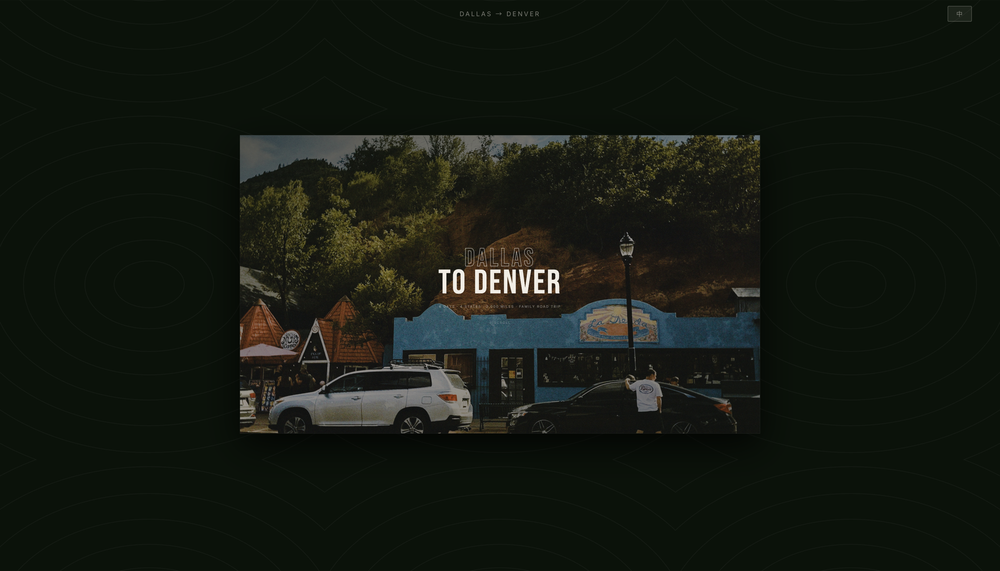
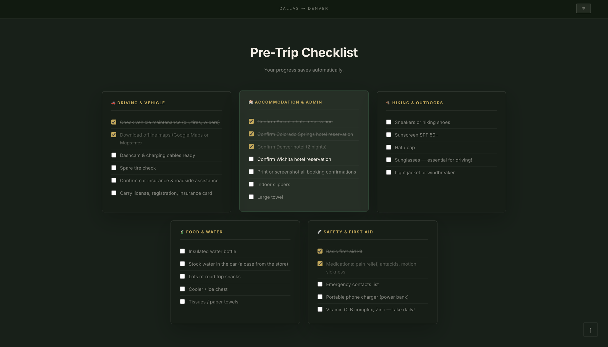
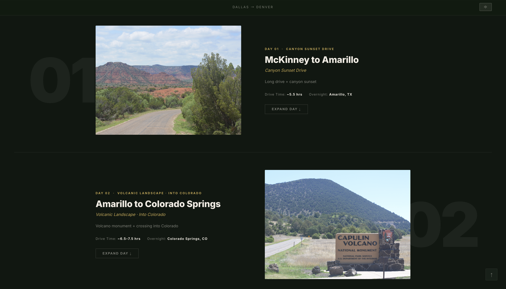

This project started as a private planning tool for a 6-day family road trip from Dallas, TX to Denver, CO — covering four states, 2,000 miles, and a mix of canyons, volcanoes, mountain passes, and open plains.
After the trip, I redesigned the site for a public audience: adding a bilingual Chinese/English toggle, a polished navigation system, and visual refinements that bring it closer to a real travel editorial. The goal was to demonstrate that a personal project could meet portfolio-level standards of design and usability.

01 · Hero — Landing Page
A road trip guide carries a lot of information — routes, stops, food, notes, checklists, photography — and it needs to be scannable on the go, not just readable at a desk.
The original version was Chinese-only, intended for family. Expanding it meant translating not just language but design intent: keeping the warmth and personal detail of a family guide while making it readable and credible to a general audience.
Key constraints: single-page (no routing), no frameworks, real trip photographs, and a language toggle that persists across sessions.
The accordion pattern for day entries solves the density problem — everything is accessible, but only one day is open at a time. The hero SVG map gives immediate spatial orientation before any scrolling happens.
Rather than two separate pages, a single language state governs both static HTML elements (via data-zh / data-en attributes) and dynamically rendered JS content. Language preference persists via localStorage.
Warm paper tones, editorial typography, and real photography keep the site feeling personal and travel-authentic — not like a generic template. The route SVG was hand-crafted to match actual geography.

02 · Pre-Trip Checklist

03 · Day Log — Journey Pages
Building this site without a framework forced me to think carefully about state management — the language toggle needs to coordinate between HTML attributes, JS-rendered DOM, and localStorage without any reactivity library to help.
It also reinforced how much visual weight real photography carries. Even with a well-structured layout, the site only comes alive once the actual trip images are in place. Design and content are inseparable.
The biggest design insight: the audience shift from family to public required almost no content change — just tone, structure, and the removal of inside jokes. Good information design is already audience-agnostic.
Live Project